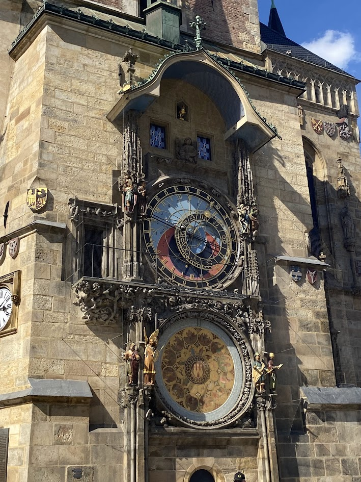
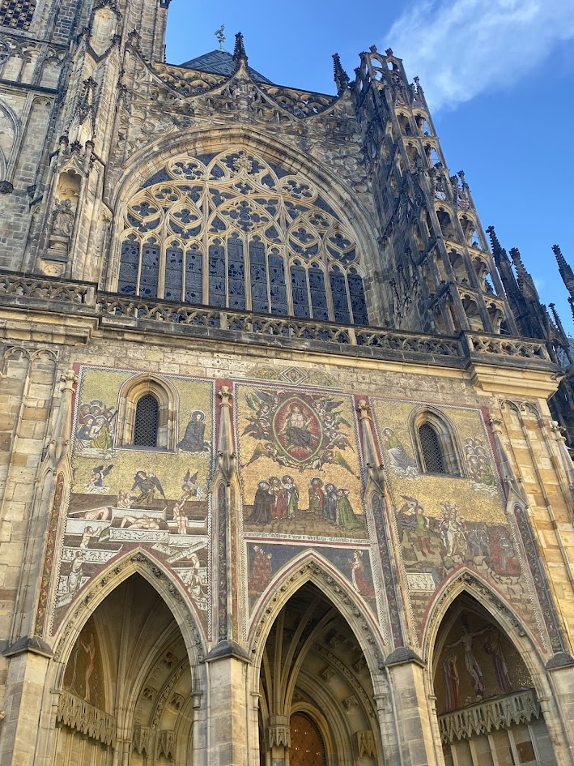
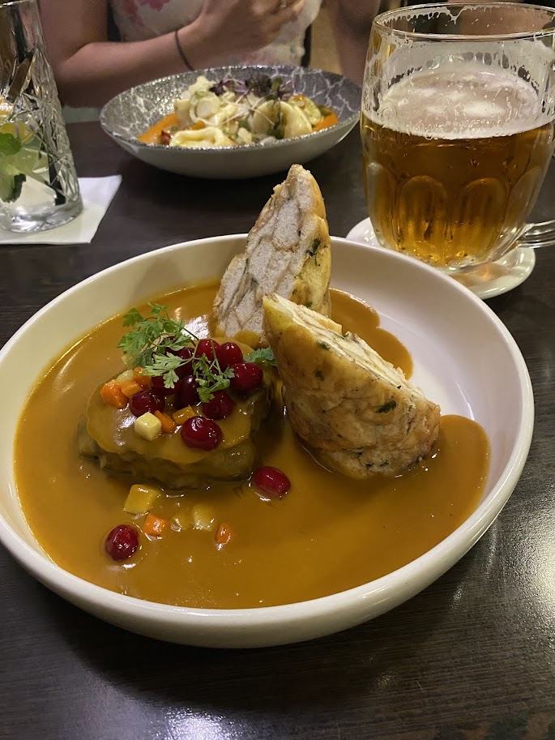
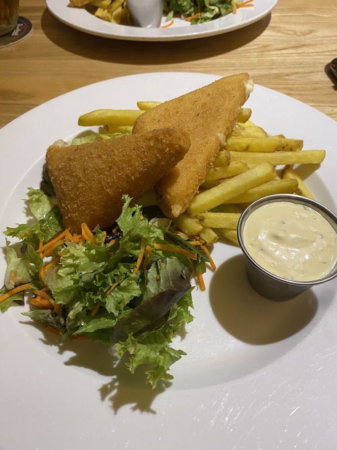
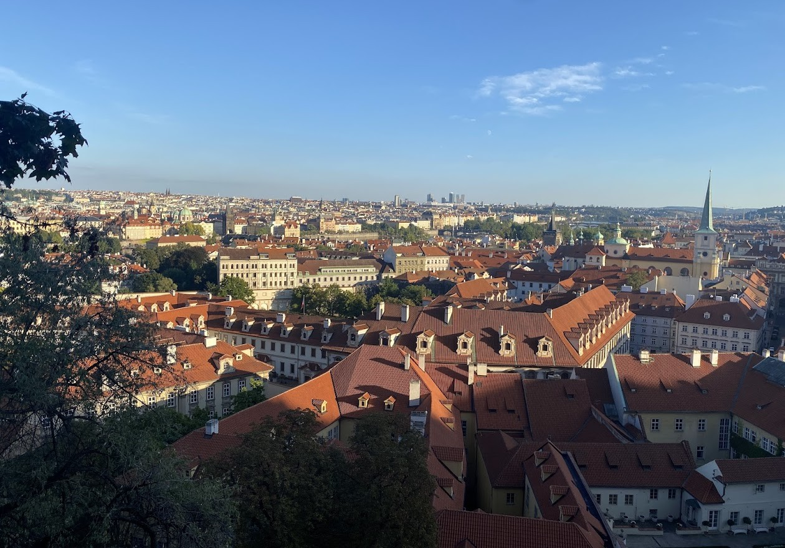
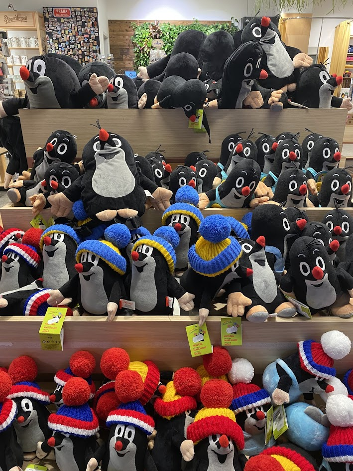

Prague, Czech Republic 🏰
A fairytale town come to life- the streets filled with cobblestones, chimney cakes, and Krtek the mole
Oct. 24, 2025

I still can't believe I made it to Prague- this city was a dream come true!
While I had spent time in Europe before, I had never visited central Europe (or gone further east than Belgium)
and I knew I'd need to come back to this city and country from the very first night. An amazing friend who is a Czech local
showed us some of the nooks and crannies that one can only encounter if they spend time slowly getting acquainted and then inevitably falling in
love with Prague. My quick 3-night stay teased me just enough to already plan a round two. And I've already raved about Prague to my friends
and family so that when I do go back, they will join me and I'll get to try even more new food 😜


Landmarks
If you have to know anything about me, it's that I love a good touristy landmark. On a slightly superficial note, it does bring me a little bit of joy to see
a famous tourist location and check it off my life. On a fortunately less superficial note, there is something that resonates very deeply in my soul that people
travel from all corners of the earth to experience the same landmarks, and that stories of these 'tourist traps' have been passed down and shared between people
that they have an international pull. In a way, I think it makes me feel connected with people who have visited, and who have yet to but will. Ok enough of my mushy feelings about travel.
Prague is beautiful. The astronomical, while busy, was 100% worth viewing. I don't think there is anything like it in the world. Prague Castle and its church are famous for a reason,
the exteriors made me stop in my tracks and stare at the intricate details that have lasted until now. Even walking to the castle, as difficult as the uphill walk was, built
exciting anticipation as the distant castle grew closer and closer. Inside the church, vibrant stained glass windows line the walls and can only truly be appreciated from the inside.
Also, I need to say how crazy it was as a Canadian who lives in the suburbs to casually be able to say that I've been to a CASTLE! A real-life castle that housed royalty!
Another landmark highlight was visiting the National Museum- it had both modern architecture and the beautiful original interior. Learning about Czech history was also very special
and made me realize how little I knew about the country. In my grade school education, we had been taught mostly about Canada, England, France, the US, and touched upon Germany. This
is also part of why I travel, to be humbled by how little I know and grow my desire to learn, understand and explore. I must be in a really sentimental mood today, huh?


Food
One of my happiest surprises was trying a Czech dumpling! Now, as a born and raised Vancouverite, I had to do a double take as I saw those words on the menu.
Dumplings existed in Europe as a completely different entity than the dim sum and xiao long baos that I grew up with? I love that the world continues to surprise me.
The bread dumplings paired well with the rich gravies and dill sauces in the traditional dish Svíčková, and soaked up all that savoury goodness while staying
airy and fluffy. Potato dumplings offered a heartier bite that reminded me of a Chinese dumpling or Polish pierogi without the meaty filling.
My most anticipated meal however, was Smažený sýr, straight up fried cheese. If any local food ever has the words "fried" and "cheese" in it, I am making a special trip to a restaurant
to satisfy my curiosity. And to no one's surprise, Smažený sýr was a hit. No notes from me. It was like eating a giant mozzerella stick with tartar sauce, fries, and a salad. Life just doesn't
get better than that now does it?
Other treats I got to sample were sweet dumplings, chimney cakes, and Czech breakfast pastries that I have unfortunately forgotten the name of but could taste and instantly remember.


Fun!
As you can tell, I really, really loved my visit to Prague. It felt calm, but central. Historical, but with a modern and forward approach. A perfectly balanced city.
Unfortunately, I left a new friend behind when I flew home. Krtek the mole will forever be in my heart.